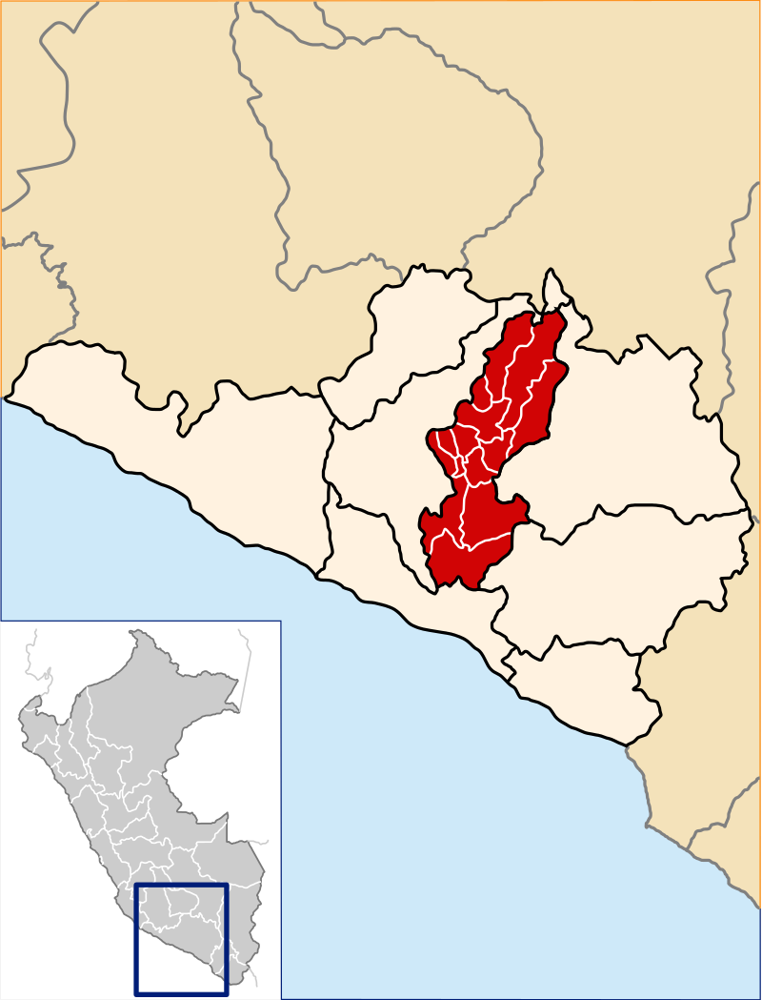
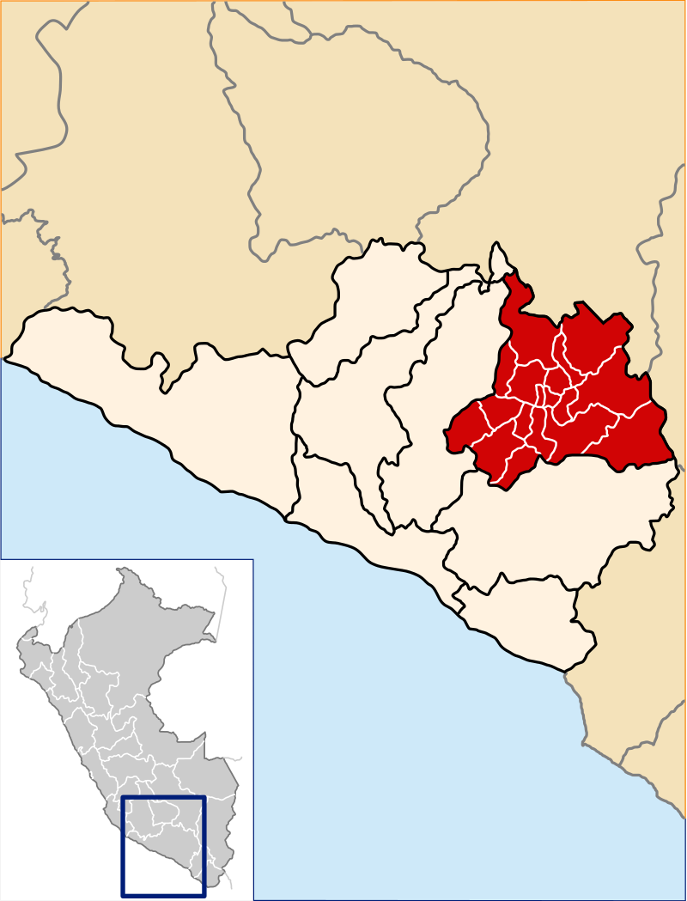
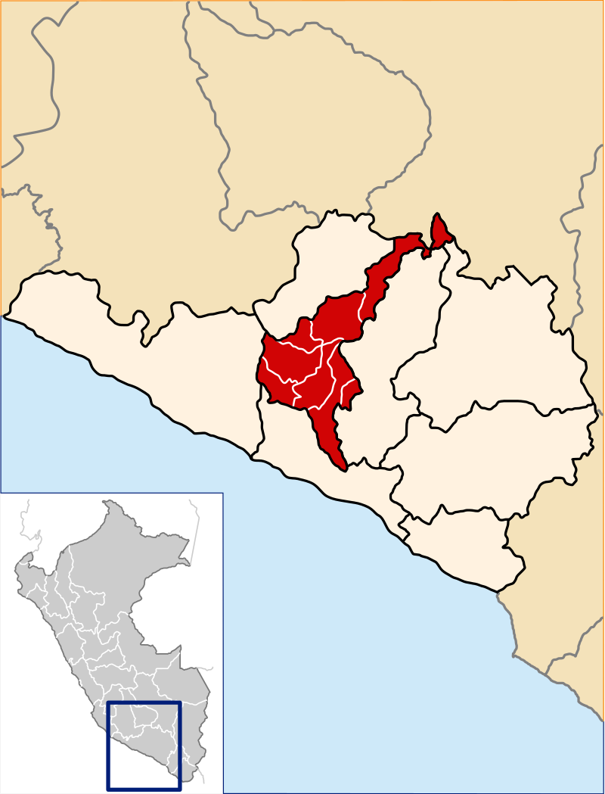
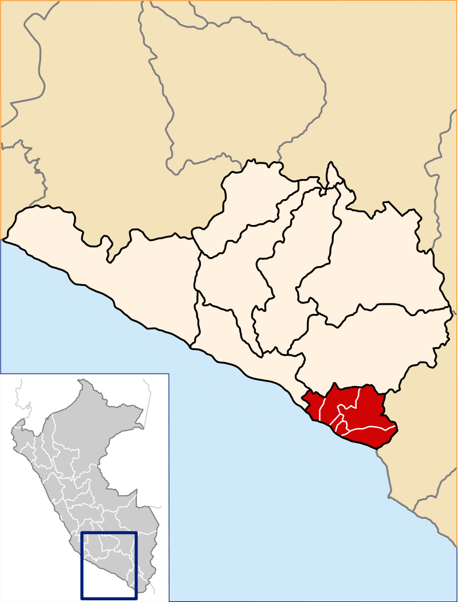

HISTORIA
La ciudad fue fundada el 15 de agosto de 1540, bajo la denominación de «Villa Hermosa de Nuestra Señora de la Asunta» en nombre del marqués don Francisco Pizarro y el 22 de setiembre de 1541 el monarca Carlos V en Cédula Real ordena que se le llamé «Ciudad de Arequipa». En el periodo virreinal adquirió desde ya importancia, misma que fue reconocida por la Corona Española a través de los títulos que se le conceden tales como «Muy Noble y Muy Leal» y el de «Fidelísima». En la historia republicana del Perú el protagonismo de la ciudad de Arequipa fue gravitante, pues llegó a ser declarada “Capital de la República” durante el gobierno de Lizardo Montero. Su casco histórico se extiende sobre un superficie de 332 hectareas y fue declarado por la Unesco como «Patrimonio Cultural de la Humanidad», por sus diversos espacios escénicos y culturales es una Ciudad Receptora de Turismo Nacional e Internacional.
ESCUDO DEL DEPARTAMENTO

GOBERNADOR REGIONAL
Kimmerlee Gutiérrez, quien asumió el cargo luego del fallecimiento de su propio padre.Con escasa experiencia en la gestión pública, ya que ella solo ha sido consejera regional con un desempeño poco sobresaliente, se presentó como candidata para suceder al vicegobernador Walter Gutiérrez, su padre, tras su fallecimiento. El líder político no llevaba más de tres semanas reemplazando a Elmer Cáceres Llica, cuando la enfermedad de la covid-19 complicó su salud y le cobró la vida.Entonces, la consejera Kimmerlee Gutiérrez se convirtió en la segunda mujer en gobernar Arequipa, después de Yamila Osorio. A sus 40 años, tomó la posta dejada por su padre y asumió el cargo un 3 de diciembre de 2021, en medio de críticas y dudas sobre su vinculación con el caso “Los hijos del cóndor”. “Yo he sido mencionada en los audios, pero no debo nada”, respondió a los periodistas cuando se le preguntó si ella también pidió terrenos en Majes, tal como hicieron un grupo de consejeros alineados con Cáceres Llica.En su primer mensaje, Gutiérrez ofreció dos cosas: la primera, luchar contra la corrupción y la segunda, reactivar los proyectos paralizados, entre ellos Majes Siguas II. Para esto, anunció que pondría en práctica su experiencia y conocimientos como economista formada en una universidad europea (Universidad Milano – Biccoca de Italia).>
MAPA DE AREQUIPA
PROVINCIAS Y DISTRITOS

- Acarí
- Atico
- Atiquipa
- Bella Unión
- Cahuacho
- Caravelí
- Chala
- Chaparra
- Huanuhuanu
- Jaqui
- Lomas
- Quicacha
- Yauca

- Camaná
- José Maria Quimper
- Mariano Nicolás Valcárcel
- Mariscal Cáceres
- Nicolás de Piérola
- Ocoña
- Quilca
- Samuel Pastor

- Andahua
- Aplao
- Ayo
- Chaschas
- Chilcaymarca
- Choco
- Huancarqui
- Machaguay
- Orcopampa
- Pampacolca
- Tipán
- Uñón
- Uraeeeca
- Viraco

- Achoma
- Cabanaconde
- Callali
- Chivay
- Coporaque
- Huambo
- Huanca
- Ichupampa
- Lari
- Lluta
- Maca
- Madrigal
- Majes
- San Antonio de Chuca
- Sibayo
- Tapay
- Tisco
- Tuti
- Yanque

- Andaray
- Cayarani
- Chichas
- Chuquibamba
- Iray
- Rio Grande
- Salamanca
- Yanaquihua

- Cocachacra
- Deán Valdivia
- Islay
- Mejía
- Mollendo
- Punta de Bombon

- Alca
- Charcana
- Cotahuasi
- Huaynacotas
- Pampamarca
- Puyna
- Quechualla
- Sayla
- Tauría
- Tomepampa
- Toro
ENLACES QUE TE PUEDEN INTERESAR
PAGINA DE LA MUNICIPALIDAD DE AREQUIPA
VIDEO INFORMATIVO DE AREQUIPA
RECOMENDACIONES TURISTICAS
COMENTANOS QUE TE PARECIO ESTÁ PAGINA WEB DANDO CLIC AQUÍ